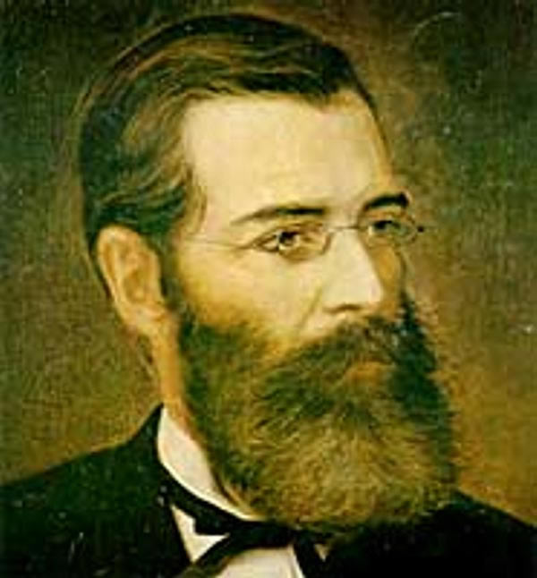

Como a historia pode lhe ajudar?
Pode explicar o porque de estarmos aqui, nessas condições, tanto do nosso país, estado ou cidade.
Ajuda a sabermos sobre como a economia decaiu ou aumentou. De saber o tudo o que houve a muitos anos atrás.
Para sabermos o porque de existirmos. Sobre o avanço tecnológico, entre outros.
Ultimas noticias
-

Titulo da noticia publicada no blog
A primeira legislatura ocorreu entre os anos de 1835 a 1837 e era composta por 28 deputados.De acordo com o art. 4º da Constituição Política do Estado do Ceará de 1891, promulgada em 16 de junho de 1891.Leia mais »
-
"abolirção dos escravos"
A província do Ceará foi a primeira do Brasil a abolir a escravidão da raça negra. Este episódio histórico, que ainda hoje nos enche de orgulho, denominar o Ceará de "Terra da Luz, Berço da Liberdade ". .Leia mais »
-

Jose de Alencar
Logo depois da proclamação da Independência, em 1822, o prestígio de D. Pedro I era muito grande, já que o povo e a maioria dos políticos o admiravam muito. Mas, aos poucos, essa situação foi se alterando. Por volta de 1830, o Brasil enfrentava sérios problemaLeia mais »